Albums
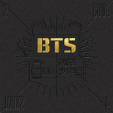
2 Cool 4 Skool
Released: June, 2013
There is only 7 songs on the track. The songs main theme was how they are rebelious kids and that they don't think they need school and it has this rebelious feel to it and the music videos help to display that. The song "No More Dream", talks about how you can study and try to achieve what society deems you should achieve like money, cars and houses without really knowing what you want for yourself.
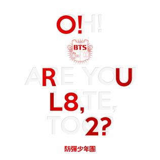
O!RUL8,2
Released: September, 2014
This is a continuation of there first album with them reinforcing the idea of schools being dystopian and that you can break out from it and do what you want. The song "N.O." emphasizes how in school you are not able to think creatively and are just forced to memorize things, the song also shows how students will compete with each other to show who is better which can cause a divide amongst students.
Skool Luv Affair
Released: February, 2014
This album is about how this boy is so in love with a girl that he doesn't know what to do but all he wants is to get her attention and to be with her. This albums also has themes of trying to follow your dreams even if it gets hard to do so.One of the songs "Spine Breaker" calls out fashion for students as well, with how people are wearing expensive clothes to show off which can cause a divide between students.
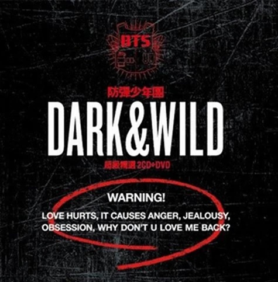
Dark & Wild
Released: August, 2014
This albums main theme is how love can change you and how sometimes it feels like it isn't worth it with all the pain that comes along with it. There is also struggles of the end of a relationship and that is shown with the song "Let me Know". This also being there second year since they debuted one of thier songs called "So 4 More" is a play on the word Sophomore.
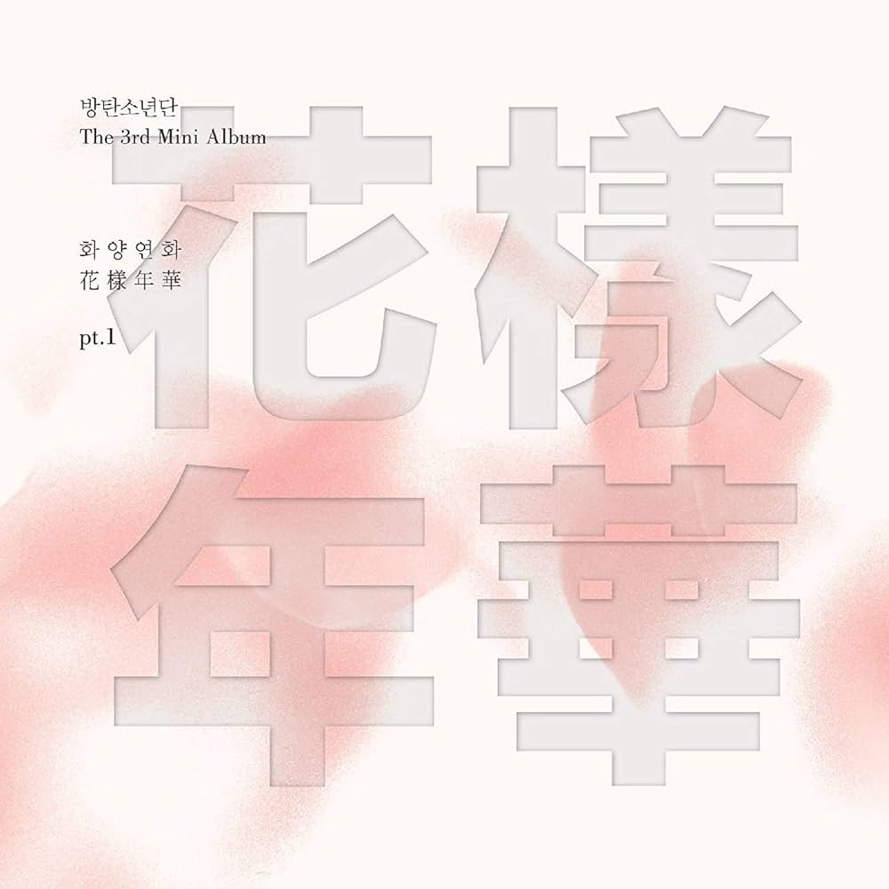
The Most Beautiful Moments In Life Pt.1
Released: April, 2015
The very first song "I need u" shows the struggle of getting out of school and becoming an adult and how it can be lonely and depressing. With growth over time though this album encourages that you follow your dreams and you do what you want to achieve and embrace your passions and keep growing into the person you want to be.
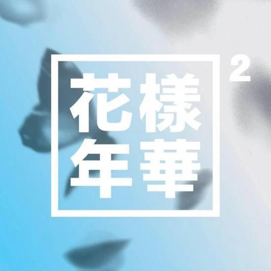
The Most Beautiful Moments In Life Pt.2
Released: November, 2015
This album countinues to show the struggles of becoming an adult and how there is good moments as well as bad moments. The song "Butterfly" symbolizes how fragile some things in life can be and that you should cherise it as long as you can. There song "Silver Spoon" in the ablum also shows the struggle they went through to get where they are in the industry and how they were still able to achieve their goals
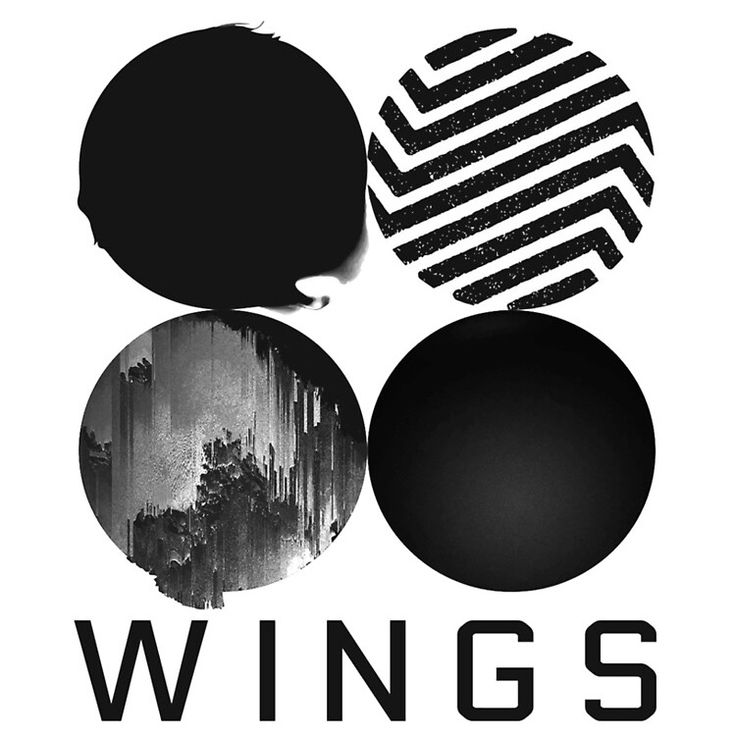
Wings
Released: October, 2016
The intro for this album shows the struggle of human nature and trying to not fall for temptation. The able wings is a symbol of how they want to use their wings to go and fly further as they grow. the song "21st Century Girl" was made to empower women when they listened to this song which shows the variety this album shows. This album covers a few different topics but its with its different themes that have made it one of their more popular albums.
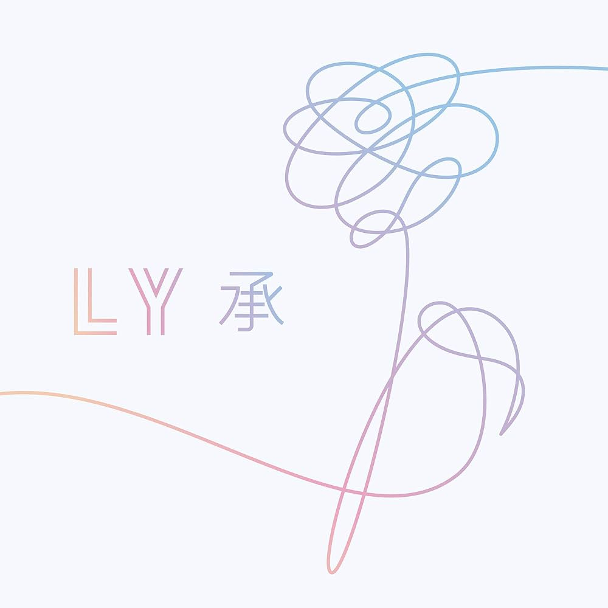
Love Yourself: Her
Released: September, 2017
This albums song themes talks about love and how some people are destined to be together. This album also covers the topics of selflove and how if you know your own strengths you can make it to your goals. With the self love message and predestined love the song "Best of Me" in the album shows how since someone is doing the best for them they will do the best for them with their own strengths.
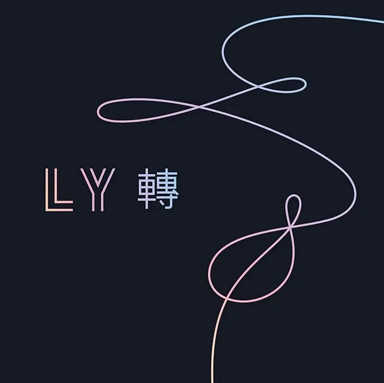
Love Yourself: Tear
Released: May, 2018
This albums still advocates for self love but in the song "FAKE LOVE" if you don't feel genuine about the love you have to be true to yourself, and how important it is to accept yourself. This album also covers the struggle of heart break after a relationship, the song "134340" talks about that struggle and made a reference to the plant Eris which led to Plutos reclassification and shows the theme of "displacement and being replaced". The Outro song was compused by Suga since during 2018 they were going through a lot of preassure and there was a risk of them disbanding and he made this for them so that they wouldn't be disconnected and they were all in tears when he played it hince the name "Tears".
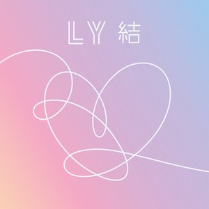
Love Yourself: Answer
Released: August, 2018
This is a combination of the other two Love Yourself Albums with the addition of a 8 more songs. One of the songs "Epiphany" talks about self improvment and how you should love yourself for who you are and this had such an impact it had 20 million views in 24 hours. For the song "I'm Fine" they flipped there "Save me" song and it has like a mirror effect on how in the intro it says save me while in "Save Me" its starts with the words I'm Fine.
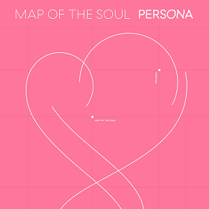
MAP OF THE SOUL: PERSONA
Released: April, 2019
This album really got traction in the U.S.A specifically because a good amount fo their songs for this album have english in it and even features a famous American artist Halsey in the song "Boy With Luv". The song "Boy With Luv" is a mature version of "Boy in Luv" based on how now the song emphasizes enjoying the tiny moments and less about obsession compared to their older song. The song "HOME" is an homage to the fanbase ARMY and how BTS has this deep connection with their fans and how they appreciate them.

MAP OF THE SOUL: 7
Released: February, 2020
This album has some songs that Persona has but there is some new additions. They song "Make it right" was gifted to BTS by Ed Sheeran, and the song talks about how ARMY helps to support BTS even during there struggles. Another very popular song on this album is the song "Black Swan" , this song talks about the fear of losing the passion for music and the choreography for this song matches the feels that the song gives off. this album overall gives some homage to their old struggles and how they will face future struggles and that they will always have the support of ARMY.
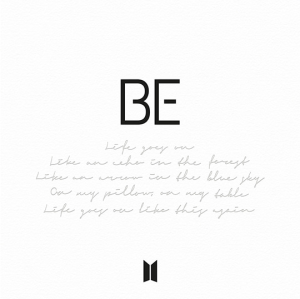
BE
Relaesed: November, 2020
With the opening song "Life Goes On" this song is a very simple message that even though we feel as though our the world is crumbling down around us that life will keep moving and keeping going. This helps convey the every all message that this album is saying, even if times get toguh keep going. Another song in this album is "Dis-ease" which was made during the pandemic and it talks about sometimes it is hard to be at rest when your so work to working all the time.
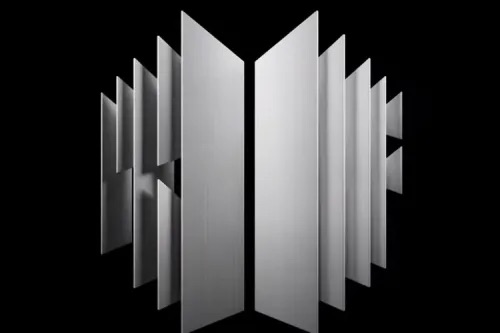
Proof
Released: June, 2022
this album was a collection of their most popular songs over the year and it is to show how much succes they have gotten over the years before they take their break since the memebers are going to do military service. They added the song "Spring day" which is an important emotional piece about of hope and how after their break they hope to come back to ARMY there fan's. Another song on this album is "Run BTS" which was a song they made to reminisce about their past and to show their determination to keep moving forward.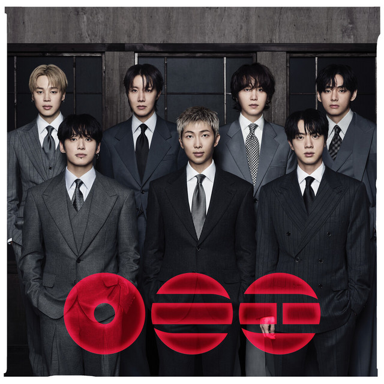
ARIRANG
Released: March, 2026
This the latest released album after BTS complete return after they all did manditory military service for Korea. The song "SWIM" was used as a teaser and this song talks about how they kept moving forward even during challenges of coming back from the military. The song "they don't know 'bout us" talks about cultural identity and how the group is very in tune with their culture and how they want to express their growth with the help of their culture.